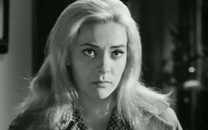
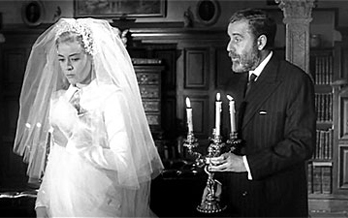
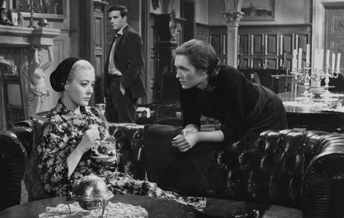
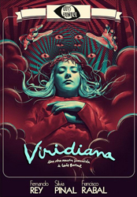
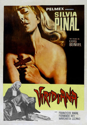
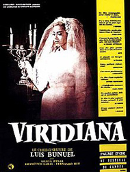
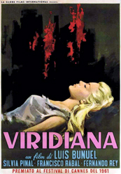
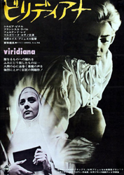

Silvia Pinal - Viridiana
Silvia Pinal - Viridiana
Fernando Rey - Don Jaime


Silvia Pinal - Viridiana
Francisco Rabal - Jorge
Margarita Lozano - Ramona
El Cojo
A novice named Viridiana is about to take her vows when her only living relative, her uncle Don Jaime, invites her to visit him. She has met him only once, and is reluctant to comply. Her mother superior pressures her to accept. Don Jaime is a recluse living on a neglected farm with a few servants: Ramona, her daughter Rita and Moncho. When Don Jaime sees his niece, he is struck by her strong resemblance to his deceased wife.
On her last night Viridiana, grateful for her uncle's longtime financial support, reluctantly complies with his odd request for her to don his wife's wedding gown. When Ramona informs her that Don Jaime wants to marry her, she's aghast, and her uncle seems to drop the idea. Ramona secretly drugs Viridiana's drink and Don Jaime carries the unconscious girl to her room intending to rape her, but at the last minute he stops. However, the next morning he lies and tells her that he "took her virginity", so she cannot return to her convent. When she insists that she must go back, he confesses that he lied, leaving her uncertain about what had happened.
At the bus stop, the authorities prevent her from leaving. Her uncle has hanged himself, leaving his property to her and his illegitimate son Jorge. Deeply disturbed, Viridiana decides not to return to the convent. Instead, she collects some beggars and installs them in an outbuilding. She devotes herself to feeding and morally educating them. Disgusted, Moncho departs. Jorge moves into the house with his girlfriend Lucia and starts to renovate the rundown place. Lucia, sensing that he lusts after Viridiana like his father did, leaves. Jorge then makes a pass at the willing Ramona.
When Viridiana and Jorge leave for a few days to take care of some business, the paupers break into the house. At first, they just want to look around, but faced with such bounty, they degenerate into a drunken, riotous bunch and party to the strains of Handel's Messiah. The beggars pose around the table for a photo in which they resemble the figures in Da Vinci's Last Supper. The rightful owners return earlier than expected and find the house in shambles. The miscreants excuse themselves one by one and leave. Jorge confronts one of them, who pulls a knife. Another beggar strikes his head with a bottle, knocking him out. Viridiana enters the room and hastens to help Jorge who is lying on the floor. The first man grabs her. As Viridiana resists sexual assault, Jorge regains consciousness. He has been tied up, but manages to bribe one beggar to kill the would-be rapist. The police finally arrive.
Viridiana is a changed woman and young Rita burns her crown of thorns. Wearing her hair loosely, Viridiana knocks on Jorge's door, but finds Ramona with him in his bedroom. As Ashley Beaumont sings Shimmy Doll on the record player, Jorge tells Viridiana that they were only playing cards and urges her to join them: "You know, the first time I saw you, I thought, my cousin and I will end up shuffling the deck together."
The film is loosely based on the 1895 novel Halma by Benito Pérez Galdós. Viridiana was the co-winner of the Palme d'Or at the 1961 Cannes Film Festival.
The Spanish board of censors rejected the original ending of the film, which depicted Viridiana entering her cousin's room and slowly closing the door behind her. Consequently, a new ending was written; this turned out to be more suggestive than the first, because it implied a ménage à trois among Ramona, Jorge and Viridiana.




